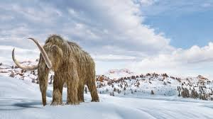
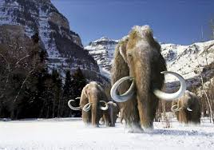
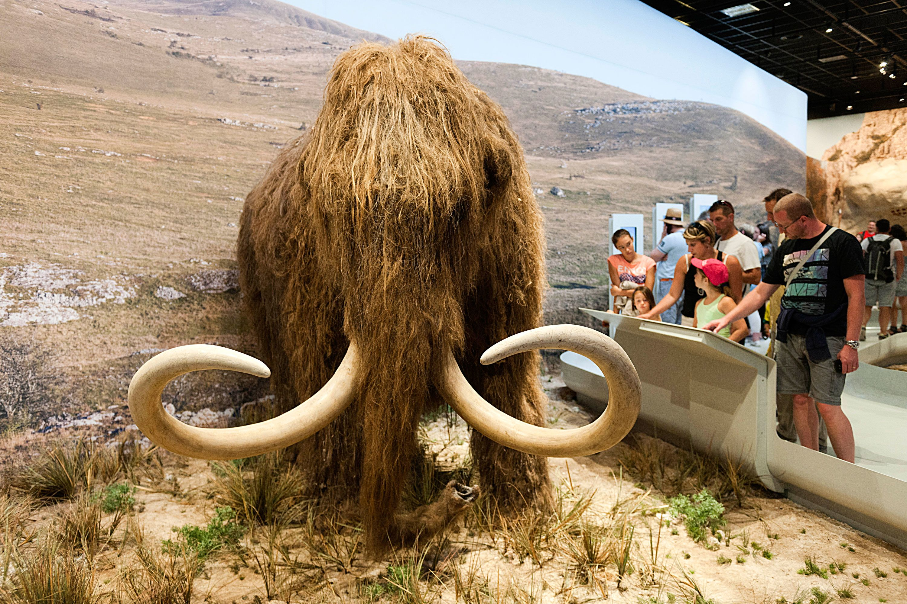
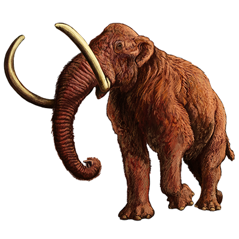
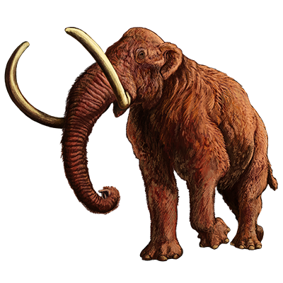

REVIVAL OF THE MAMMOTH
The company Colossal (Biotech Company) are trying to reincarnate the Wooly Mammoth using gene editing. They are first going to use genetic editing to change the Asian elephant genome to a Wooly Mammoth genome. The Asian Elephant are the closest living ancestors to the Wooly Mammoth sharing 98.5% of mitchondrial DNA with each other. They then are going to place the genetic edited Wooly Mammoth genome in an African or Asian elephant. The elephants are going to act like surrogates to the Wooly Mammoth and give birth to them.
  Scientists think that Wooly mammoths help with climate change. Mammoths thousands of years of ago scraped away layers of snow and that made it so cold air could reach the soil and maintain permafrost. After they went extinct there was no one there to scrape the snow which meant that the permafrost began to warm, releasing greenhouse gases. The comapny Colossal is currently expecting to clone the Wooly Mammoth by 2027.
 
